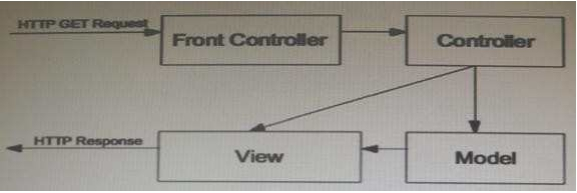
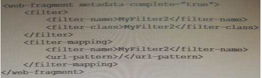
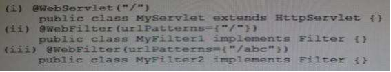

316~320
316.ServletContextListeners are invoked in
A. Random order
B. contextInitialized and contextDestroyed are invoked in the order in which they are declared in the web.xml
C. contextInitialized method are invoked in the order in which they are declared in the web.xml and the contextDestroyed method is invoked in the reverse order in which they are declared in the web.xml
D. contextInitialized and contextDestroyed are invoked in the reverse order of which they are declared in the web.xml
答案：C
備註：根據API及規格書的說明，每個ServletContextListener的contextInitialized以其在部署描述檔中宣告的順序執行，contextDestroyed則是以相反順序執行
相關說明：Servlet 3.0規格書8.2.3 Assembling the descriptor from web.xml, webfragment.xml and annotations
317.A servlet class is injected with a JDBC data source. After injection has occurred, the servlet needs to create a cache out of some of the data in the database, so as to improve responsiveness. Which two methods can host the cache creation code? (Choose two)
A. Servlet.init()
B. Servlet.destroy()
C. A method annotated with @Init
D. A method annotated with @PostConstruct
E. A method annotated with @PreDestroy
F. A method annotated with @Resource
答案：A、D
備註：由題目可知該Servlet在注入JDBC Data Source後要利用資料庫的一些資料建立快取來提高回應速度，這動作只會執行一次，因此可以在Servlet的init方法，或是將某個方法以@PostConstruct標註來達成
| Annotation名稱 | 定義 |
|---|---|
| @PostConstruct | 被@PostConstruct標註的方法會在建構子和init方法之間執行，只會被執行一次，類似init方法 |
| @PreDestroy | 被@PreDestroy標註的方法會在destroy方法執行後跟Servlet被徹底卸載前的這段時間執行，只會被執行一次，類似destroy方法 |
| @Resource | 用來定義資源參照，與@Autowired功能類似 |
相關說明：
Java开发之@PostConstruct和@PreConstruct注解 - 屠龙灬世家 - 博客园
Servlet 3.0規格書15.5 Annotations and Resource Injection
318.View the Exhibit.

Which two technologies would be suitable for use as Front Controller elements? (Choose two)
A. JSP
B. Servlet
C. Filter
D. POJO
E. Custom Tag
答案：A、B
備註：Front Controller並不限於只能用Servlet來統一處理請求，其實也可以用JSP(但比較不好)
相關說明：
Head First Servlets&JSP ch14 設計模式及Struts(p.769)
Core J2EE Patterns - Front Controller
319.Given a war file with the following structure
| - WEB-INF/classes/MyServlet.class
| - WEB-INF/lib/wf.jaf
Where wf.jar contains a valid web-fragment.xml and the following two classes: MyFilter1.class and MyFiler2.class.
The web-fragment.xml is as follows:

The following are some code snippets:

When one access "/" of the above web application, which filters will be executed?
A. No filters will be executed.
B. MyFilter1
C. MyFilter2
D. MyFilter1 and MyFilter2
答案：C
備註：因為在web-fragment.xml有出現metadata-complete="true"，所以只會掃描在web-fragment.xml中的設定，Java類別上的@WebServlet、@WebFilter、@WebListener標註會被忽略，因此只有MyFilter2會執行
相關說明：Servlet 3.0規格書15.5 Annotations and Resource Injection
320.Which Java expression can be used to check whether the web container is currently configured to track sessions via URL rewriting?
A. servletContext.getSessionCookiesConfig().isHttpOnly()
B. servletContext.getSessionCookiesConfig().isSecure()
C. servletContext.getDefaultSessionTrackingModes().contains(SessionTrackingMode.URL)
D. servletContext.getEffectiveSessionTrackingModes().contains(SessionTrackingMode.URL)
答案：D
備註：本題要選能夠判斷目前是否設定成用URL重寫來進行Session Tracking的方法，根據API，可以先用ServletContext的getEffectiveSessionTrackingModes()取得Set<SessionTrackingMode>後再去看裡面是否包含SessionTrackingMode.URL(SessionTrackingMode的列舉值有COOKIE、URL、SSL)
不能選C的原因是因為getDefaultSessionTrackingModes拿到的是預設的Session Tracking設定，可能會跟目前容器的設定不同
相關說明：